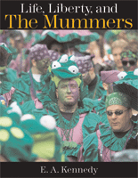

A stunning photo-essay on America's most dazzling parade
A stunning photo-essay on America's most dazzling parade


 A stunning photo-essay on America's most dazzling parade
A stunning photo-essay on America's most dazzling parade

|  |
Life, Liberty, and the MummersE. A. Kennedy IIIcloth EAN: 978-1-59213-588-2 (ISBN: 1592135889) |
"You have your religion, we've got ours. You go to your church, we go to church too, but we also go to our clubhouses. That's part of our religion. That's our culture."
—Francis "Frannie" McIntyre, who has been a Mummer for 73 of his 78 years
The Mummers Parade is like no other parade in the world. With 10,000 wildly-costumed participants stepping out every New Year's Day in South Philadelphia, it is one of the most spectacular annual parades in the U.S. This remarkable book is a "family portrait" of the parade. It presents, in pictures and in words, the flamboyantly-attired Mummers and reveals the everyday, working-class people beneath the outrageous garb.
Noted photographer E. A. Kennedy spent four years documenting the Mummers and their parade. He has personally selected the striking images included here-more than150 in all-and he has written an engaging history of the Parade itself. As Kennedy explains, and as his photos make clear, "mummery" is a way of life for Mummers, who have deep attachments to their clubs, associations and brigades.
For all its glitz, the Mummers Parade remains a folk parade. This is the captivating story of the folks behind the parade.
Excerpt available at www.temple.edu/tempress
"Our clubhouse is like a church; it becomes spiritual. There's a lot of love here. A lot of guys don't have family. We're their family."
—Bill Murtha age 55, a retired UPS truck driver
�At first glance, Kennedy�s appears to be a picture book�a large format collection of color photographs from four years of mumming. Examined more closely, however, Kennedy�s words prove as insightful as his photographs.... Kennedy has assembled a body of images and an informed commentary that gives form and color to these forces of continuity and change.�
—Western Folklore
Preface
Acknowledgements
1. Introduction
2. The Mummers
3.The Comics
4. The Wenches
5. The String Bands
6. The Fancies
7. The Fancy Brigades
8. The Pursuit of Happiness
Sources
 | E.A. Kennedy, III, is an accomplished editorial photographer whose work has appeared in Time magazine, the New York Times, Business Week, the Dallas Morning News, and other publications nationwide. His photographs have been recognized with numerous awards and in 2004, he was chosen as one of the ninety most important African American photographers in the U.S. to participate in a historic celebration of Gordon Parks' 90th birthday. Kennedy has been a contributing photographer for seven photography books, including the internationally-acclaimed Songs of My People: An African American Self-Portrait (and the accompanying exhibit which opened at the Corcoran Gallery in Washington, DC) and America 24/7. |
Philadelphia Region
General Interest
Art and Photography
© 2015 Temple University. All Rights Reserved. This page: http://www.temple.edu/tempress/titles/1880_reg.html.